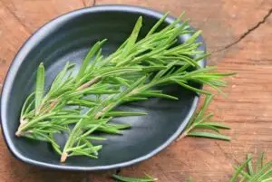
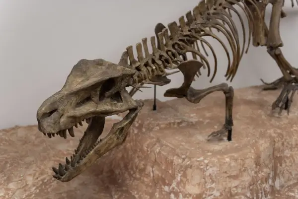

Магазин

Рузмаринот не е само зачин: Научниците откриваат како оваа билка може да влијае врз памтењето
Рузмаринот со векови се користи во традиционалната медицина и во исхраната, а новите научни анализи повторно го ставаат во центарот на вниманието.
Кој испадна од „Танц со ѕвездите“ по Дизни-вечерта во осмата недела?
Како гостинка во жирито се придружи и добитничката на „Тони“, Синтија Ериво , па максималниот број поени оваа недела изнесуваше 40.
Помалку од 42 минути дневна светлина може да биде предупредувачки знак: Ново истражување за ризикот од деменција
Изложеноста на природна дневна светлина можеби има многу поголемо значење за здравјето на мозокот отколку што досега се претпоставуваше.
Ставете сад со оваа состојка во бањата: Ја апсорбира целата влага, ништо нема да се собере во аглите
Солта има способност да привлекува влага од воздухот, па затоа можете да ја истурите во плиток стаклен или керамички сад и да го оставите на место каде што пареата се задржува н...
Катерина Котеска, адвокат: „Порано мажот носеше пари, а жената седеше дома, сега таа треба и да носи и да пере и да готви“
А сега, вели, ама и ти ќе одиш на работа, и ти плата, кај е твојата плата, и ти треба да учествуваш овде?
Како навистина настанува еден моден тренд
Дали некогаш сте се запрашале како одредена боја, крој или парче облека одеднаш станува популарно насекаде?.

Пронајдени крвни клетки од диносаурус стари 115 милиони години
Истражувачи од Универзитетот „Кертин“ во Австралија идентификуваа структури што наликуваат на фосилизирани црвени крвни зрнца, заедно со молекули изведени од крвта.
„Дојрански рибар“ – нова скулптура на Никола Пијанманов ќе го краси крајбрежјето на Дојранското Езеро
Со поставувањето на ова дело, Дојран добива ново уметничко обележје кое ја слави неговата традиција и луѓето што со генерации живеат со езерото, претворајќи ја приказната за дој...
Дневен хороскоп за 3 ноември 2026: Вагите ги преиспитуваат чувствата, Лавовите сакаат признание
Ретроградната Венера ве поттикнува да размислите што навистина ви е потребно во љубовта и колку вашите очекувања се во согласност со реалноста.
ТЕСТ: Mazda CX-80 3.3 e-Skyactiv D i-ACTIV AWD Homura Plus – Дваесеттина сантиметри прават огромна разлика!
Новата Mazda CX-60 не ни е непознат SUV.